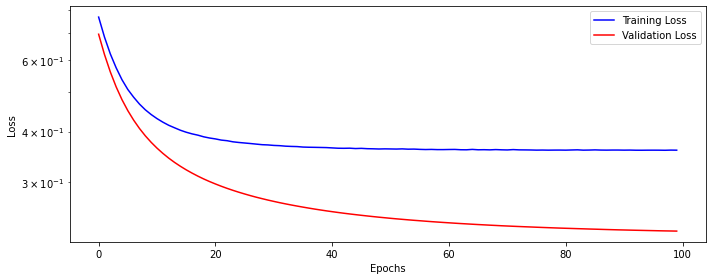
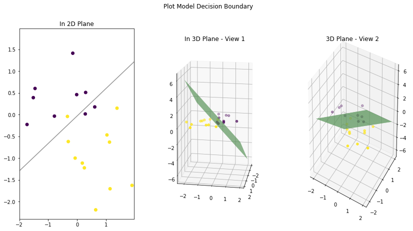
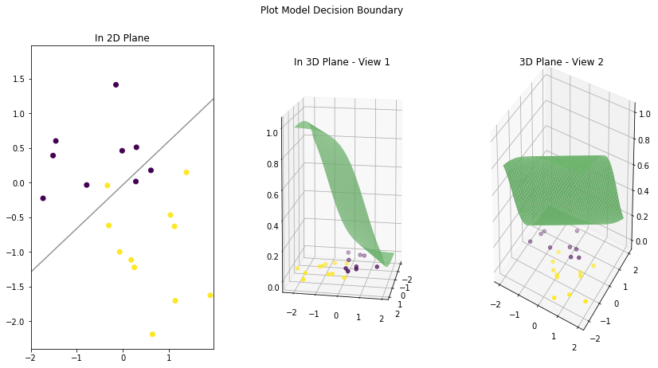
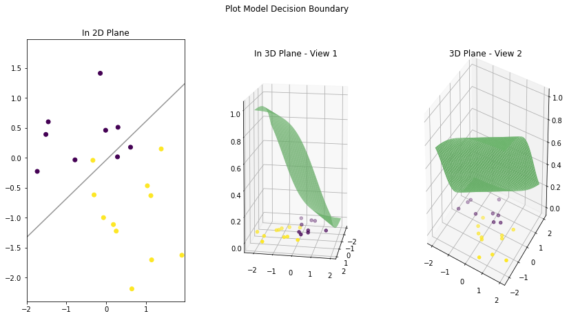

This is a practice notebook for implementing a two class logistic regression model in PyTorch. We will start by generating some synthetic data and then build an end-to-end pipeline to train a model. We will also see two ways to implement logistic regression models.
Published
October 11, 2022
Introduction
In this notebook, we will train a logistic regression model using PyTorch. Given below is the summary of the steps followed in this notebook. * Create a synthetic binary class dataset * Split the data into Train and Validation datasets. Then convert them into mini-batches using PyTorch DataLoader class * Create a Neural Net model configuration, an SGD optimizer, and a loss function * Create a pipeline that will train the model on given data and update the weights based on the loss * Compare the results with a scikit-learn logistic regression model
This notebook takes inspiration from the book “Deep Learning with PyTorch Step-by-Step” by “Daniel Voigt Godoy”. You can get the book from its website: pytorchstepbystep. In addition, the GitHub repository for this book has valuable notebooks and can be used independently: github.com/dvgodoy/PyTorchStepByStep. Parts of the code you see in this notebook are taken from chapter 3 notebook of the same book.
Generate synthetic data
In this section, we will generate some data representing two interleaving half-circles using sklearn.datasets.make_moons. The purpose of make_moons function is defined as
Make two interleaving half circles. A simple toy dataset to visualize clustering and classification algorithms … It generates 2d binary classification datasets that are challenging to certain algorithms (e.g. centroid-based clustering or linear classification), including optional Gaussian noise.
## # Synthetic data generationfrom sklearn.datasets import make_moonsfrom sklearn.preprocessing import StandardScalerfrom sklearn.model_selection import train_test_splitX, y = make_moons(n_samples=100, noise=0.3, random_state=0)# split data into train-validation sets using 80-20 ratioX_train, X_val, y_train, y_val = train_test_split(X, y, test_size=.2, random_state=13)# standardize datasc = StandardScaler()sc.fit(X_train)X_train = sc.transform(X_train)X_val = sc.transform(X_val)
Let’s view the first ten elements of the generated data. Note that X_train has two features (2 columns), and y_train has 0,1 classes as labels.
Load generated data into PyTorch Dataset and DataLoader class
In this section, we will load our data in PyTorch helper classes Dataset and DataLoader. PyTorch documentation defines them as: [see basics/data_tutorial]
Code for processing data samples can get messy and hard to maintain; we ideally want our dataset code to be decoupled from our model training code for better readability and modularity. PyTorch provides two data primitives: torch.utils.data.DataLoader and torch.utils.data.Dataset that allow you to use pre-loaded datasets as well as your own data. Dataset stores the samples and their corresponding labels, and DataLoader wraps an iterable around the Dataset to enable easy access to the samples.
For this, we first need to convert NumPy data arrays to PyTorch tensors.
Now load the tensors into Dataset and DataLoader class. PyTorch Dataset is a helper class that converts data and labels into a list of tuples. DataLoader is another helper class to create batches from Dataset tuples. batch_size means the number of tuples we want in a single batch. We have used 16 here since our data is small. So each fetch from DataLoader will give us a list of 16 tuples.
## # Load tensors into Dataset and DataLoaderfrom torch.utils.data import DataLoader, TensorDataset# Builds dataset containing ALL data pointstrain_dataset = TensorDataset(x_train_tensor, y_train_tensor)val_dataset = TensorDataset(x_val_tensor, y_val_tensor)# Builds a loader of each settrain_loader = DataLoader(dataset=train_dataset, batch_size=16, shuffle=True)val_loader = DataLoader(dataset=val_dataset, batch_size=16)
Define a class to implement training, validation, and mini-batch processing pipeline
In this section we will implement a class that encapsulates all the usual steps required in training a PyTorch model. This way we can focus more on the model architecture and performance, and less concerned about the boilerplate training loop. Important parts of this class are * __init__: Class constructor to define the main actors in a training cycle including model, optimizer, loss function, training and validation DataLoaders * _make_train_step_fn: Training pipeline is usually called “training step” which includes the following steps 1. Compute our model’s predicted output - the forward pass 2. Compute the loss 3. Compute gradients i.e., find the direction and scale to update the weights to reduce the loss 4. Update weight parameters using gradients and the learning rate * _make_val_step_fn: Validation pipeline is usually called the “validation step” which includes the following steps 1. Compute our model’s predicted output - the forward pass 2. Compute the loss 3. Note that during validation, we are only concerned about the loss, i.e., how well our model performs on the validation dataset. Therefore, we don’t use it to calculate the gradients. * _mini_batch: It defines the steps to process a single minibatch in a helper function. For a mini-batch processing, we want to 1. Get the next batch of data and labels (x, y) from the DataLoader iterator 2. Perform a step on the batch. A step can be either training or validation 3. Compute the average batch loss * train: Execute training and validation steps for given number of epoch * predict: Make a prediction from model on provided data
import numpy as npimport datetimefrom torch.utils.tensorboard import SummaryWriterclass DeepLearningPipeline(object):def__init__(self, model, loss_fn, optimizer):# Here we define the attributes of our class# We start by storing the arguments as attributes # to use them laterself.model = modelself.loss_fn = loss_fnself.optimizer = optimizerself.device ='cuda'if torch.cuda.is_available() else'cpu'# Let's send the model to the specified device right awayself.model.to(self.device)# These attributes are defined here, but since they are# not informed at the moment of creation, we keep them Noneself.train_loader =Noneself.val_loader =Noneself.writer =None# These attributes are going to be computed internallyself.losses = []self.val_losses = []self.total_epochs =0# Creates the train_step function for our model, # loss function and optimizer# Note: there are NO ARGS there! It makes use of the class# attributes directlyself.train_step_fn =self._make_train_step_fn()# Creates the val_step function for our model and lossself.val_step_fn =self._make_val_step_fn()def set_loaders(self, train_loader, val_loader=None):# This method allows the user to define which train_loader (and val_loader, optionally) to use# Both loaders are then assigned to attributes of the class# So they can be referred to laterself.train_loader = train_loaderself.val_loader = val_loaderdef _make_train_step_fn(self):# This method does not need ARGS... it can refer to# the attributes: self.model, self.loss_fn and self.optimizer# Builds function that performs a step in the train loopdef perform_train_step_fn(x, y):# Sets model to TRAIN modeself.model.train()# Step 1 - Computes our model's predicted output - forward pass yhat =self.model(x)# Step 2 - Computes the loss loss =self.loss_fn(yhat, y)# Step 3 - Computes gradients for both "a" and "b" parameters loss.backward()# Step 4 - Updates parameters using gradients and the learning rateself.optimizer.step()self.optimizer.zero_grad()# Returns the lossreturn loss.item()# Returns the function that will be called inside the train loopreturn perform_train_step_fndef _make_val_step_fn(self):# Builds function that performs a step in the validation loopdef perform_val_step_fn(x, y):# Sets model to EVAL modeself.model.eval()# Step 1 - Computes our model's predicted output - forward pass yhat =self.model(x)# Step 2 - Computes the loss loss =self.loss_fn(yhat, y)# There is no need to compute Steps 3 and 4, # since we don't update parameters during evaluationreturn loss.item()return perform_val_step_fndef _mini_batch(self, validation=False):# The mini-batch can be used with both loaders# The argument `validation`defines which loader and # corresponding step function is going to be usedif validation: data_loader =self.val_loader step_fn =self.val_step_fnelse: data_loader =self.train_loader step_fn =self.train_step_fnif data_loader isNone:returnNone# Once the data loader and step function, this is the # same mini-batch loop we had before mini_batch_losses = []for x_batch, y_batch in data_loader: x_batch = x_batch.to(self.device) y_batch = y_batch.to(self.device) mini_batch_loss = step_fn(x_batch, y_batch) mini_batch_losses.append(mini_batch_loss) loss = np.mean(mini_batch_losses)return lossdef set_seed(self, seed=42): torch.backends.cudnn.deterministic =True torch.backends.cudnn.benchmark =False torch.manual_seed(seed) np.random.seed(seed)def train(self, n_epochs, seed=42):# To ensure reproducibility of the training processself.set_seed(seed)for epoch inrange(n_epochs):# Keeps track of the numbers of epochs# by updating the corresponding attributeself.total_epochs +=1# inner loop# Performs training using mini-batches loss =self._mini_batch(validation=False)self.losses.append(loss)# VALIDATION# no gradients in validation!with torch.no_grad():# Performs evaluation using mini-batches val_loss =self._mini_batch(validation=True)self.val_losses.append(val_loss)# If a SummaryWriter has been set...ifself.writer: scalars = {'training': loss}if val_loss isnotNone: scalars.update({'validation': val_loss})# Records both losses for each epoch under the main tag "loss"self.writer.add_scalars(main_tag='loss', tag_scalar_dict=scalars, global_step=epoch)ifself.writer:# Closes the writerself.writer.close()def predict(self, x):# Set is to evaluation mode for predictionsself.model.eval() # Takes aNumpy input and make it a float tensor x_tensor = torch.as_tensor(x).float()# Send input to device and uses model for prediction y_hat_tensor =self.model(x_tensor.to(self.device))# Set it back to train modeself.model.train()# Detaches it, brings it to CPU and back to Numpyreturn y_hat_tensor.detach().cpu().numpy()def plot_losses(self): fig = plt.figure(figsize=(10, 4)) plt.plot(self.losses, label='Training Loss', c='b') plt.plot(self.val_losses, label='Validation Loss', c='r') plt.yscale('log') plt.xlabel('Epochs') plt.ylabel('Loss') plt.legend() plt.tight_layout()return fig
Create model configuration
In this section, we will configure the model for training, define a loss function, and an optimizer to update the weights.
There are two ways in which we can define our logistic classifier.
First Approach: A model with a single linear layer and no activation function at the end. In this case, the output from the model will not be probabilities, and the loss function we use is nn.BCEWithLogitsLoss. This way, our model is similar to a linear regression model but with a different loss function. ‘BCEWithLogitsLoss’ is a variant of Binary Cross Entropy loss function (nn.BCELoss) and is defined as ‘numerically more stable’ [see docs torch.nn.BCEWithLogitsLoss.html]
This loss combines a Sigmoid layer and the BCELoss in one single class. This version is more numerically stable than using a plain Sigmoid followed by a BCELoss as, by combining the operations into one layer, we take advantage of the log-sum-exp trick for numerical stability.
In this approach, we train a model without ‘Sigmoid’ layer. But at the time of classification, we pass the output (called as logits) from the model to ‘Sigmoid’ function to get class probabilities.
Second Approach: Here we have an activation function (nn.Sigmoid) after the Linear layer. In this case, we have probabilities as an output. The loss function we use in this case is torch.nn.BCELoss.
Let’s try both these approaches.
Logistic regression model without Sigmoid layer
### Logistic model configuration without Sigmoid layerimport torch.nn as nnimport torch.optim as optimlr =0.1torch.manual_seed(42)model_1 = nn.Sequential()model_1.add_module('linear', nn.Linear(2, 1))# Defines a SGD optimizer to update the parametersoptimizer_1 = optim.SGD(model_1.parameters(), lr=lr)# Defines a BCE loss functionloss_fn_1 = nn.BCEWithLogitsLoss()
Let’s see how our training and validation loss looks like.
fig = dlp_1.plot_losses()

Let’s also print the weights learned by our model. Note that there are two weights in the linear layer, as there were two features (or columns) for our X_train data.
Let’s also create a confusion matrix for our validation data. Note that here we have used torch.sigmoid to convert the output from the model into probabilities.
Now let’s again create our model, but this time ‘Sigmoid’ layer is attached at the end.
### Logistic model configuration with Sigmoid layermodel_2 = nn.Sequential()model_2.add_module('linear', nn.Linear(2, 1))model_2.add_module('sigmoid', nn.Sigmoid())# Defines a SGD optimizer to update the parametersoptimizer_2 = optim.SGD(model_2.parameters(), lr=lr)# Defines a BCE loss functionloss_fn_2 = nn.BCELoss(reduction='mean')
Let’s also create a confusion matrix for comparison. Note that the results are same as from the first model.
from sklearn.metrics import confusion_matrixprobabilities_val = dlp_2.predict(X_val).squeeze()cm_thresh50 = confusion_matrix(y_val, (probabilities_val >=0.5))cm_thresh50
array([[ 7, 2],
[ 1, 10]])
Let’s also print the model output for five validation data points. Each output shows the probability of a point belonging to class 0 or 1. The points with a probability greater than 0.5 are put into class 1, and the remaining are placed into class 0. So from the below output
Let’s also print the output from model for five validation data points. Again, remember the output is probabilities, and the sum of each row is 1.
Note that the scikit-learn model output has two columns. Both show the probabilities of a point for class 0 or 1 (left to right). PyTorch model only outputs the probability of a point belonging to class 1 (right column). Since the sum of probabilities is equal to 1, we can find the other class probability (for binary classifiers only) if we have one class probability.
What classification has to do with regression, and why do we call it logistic regression? Remember that our binary classifier model has a linear layer with a logistic function at the end. A logistic function is an S-shaped curve function wiki/Logistic_function.
When doing linear regression, we are trying to find a line that best fits our data points. We measure our error by finding the distance between each data point and our fitted line. If the distance between points and the line is minimum, we say we have found the best line that fits our data. Otherwise, we wiggle it up and down slowly till our errors are minimum.
In the case of logistic regression, we are also fitting a line on our data such that it can separate them into distinct categories. Points on one side of the line belong to class A, and points on the other side belong to class B. We usually call this line a decision boundary.
How do we measure our error in this case? We can measure error by counting how many points we have correctly classified. But just using a count is a very rough measurement. Because there can be multiple angles on which we can place a line in data and still be able to classify the points by the exact count. There should be a better way to tell us that a particular line angle is better than all others. For this, we use probabilities from a sigmoid (logistic) function. This helps us to capture the errors in a better way.
If a data point is on one side of the line (decision boundary) but is further away from it, we say it has a high probability of being in class A. If a point is close to the line, we say it has a low probability of being in class A. And we can extend this logic for points on the other side of the line. If a data point is on the other side of the decision boundary but close to the line, we give it a low probability of being in class B. And if a point is on the other side but farther away, we give it a high probability of being in class B.
During training, we are trying to find a line that maximizes the certainty of data points for being in their correct classes.
Let’s create a plot to see how our decision boundary looks like for our trained models.
Decision boundary for logistic regression model without Sigmoid
Let’s view the decision boundary for the first model we built. That model has only a Linear layer and no Sigmoid function at the end. Notice that the decision boundary is a straight line (or a plane in 3D) that cuts the data in a way that maximizes the certainty of data for being in one class or the other.
plot_decision_boundary(model_1, X_train, X_val)

Decision boundary of a logistic regression model with Sigmoid
Let’s draw the decision boundary for our classification model with Sigmoid as the last layer.
Note that it is not a line this time when we view the decision boundary in 3D space. The 3D plane is more like an S-shaped curve. Because now our model output is probabilities coming out of a logistic function. Think of it as an extra step that is now added to the output of the first model (without sigmoid). The points on the extreme right side of the first model linear plane are given the lowest probabilities (almost zero). And as we move to the left, the possibilities gradually increase with 0.5 at the middle and highest when we reach the extreme left (almost 1).
plot_decision_boundary(model_2, X_train, X_val)

Decision boundary of sklearn logistic regression model
Let’s now plot the same for sklearn model. The plot is similar to the last model.
plot_decision_boundary(logreg, X_train, X_val)

Can we do better?
We have seen that our models’ decision boundaries are linear (a line), and on the validation set they misclassify 3 points (two purple dots below the line and one yellow dot above the line). What if we can bend our decision boundary a little? Will it be able to better capture the classes in validation data? Let’s test it.
We introduce non-linearity to our decision boundary by placing a non-linear activation function between our neural net layers. Let’s create another model but this time use two hidden layers with a non-linear activation function (ReLU) in between them.
### Logistic model configuration with two hidden layers and ReLU in between# No Sigmoid layer at the endmodel_3 = nn.Sequential()model_3.add_module('linear1', nn.Linear(2, 10))model_3.add_module('activation1', nn.ReLU())model_3.add_module('linear2', nn.Linear(10, 1))# Defines a SGD optimizer to update the parametersoptimizer_3 = optim.SGD(model_3.parameters(), lr=lr)# Defines a BCE loss functionloss_fn_3 = nn.BCEWithLogitsLoss()
Let’s create a confusion matrix. Notice that our error has slightly improved, and the model misclassifies only two purple data point from the validation set.
Let’s plot the model’s decision boundary. First, notice that it is not linear and has a bend. This effect is due to placing a non-linear activation function after a linear layer. And, it has correctly captured a yellow point and barely missed purple points.


{kind=link}